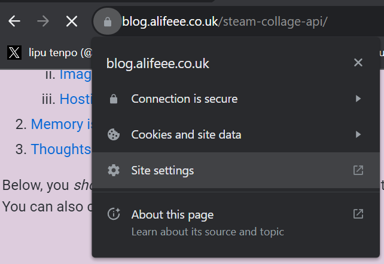
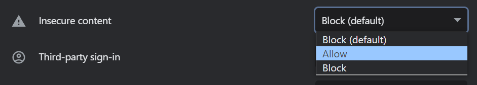
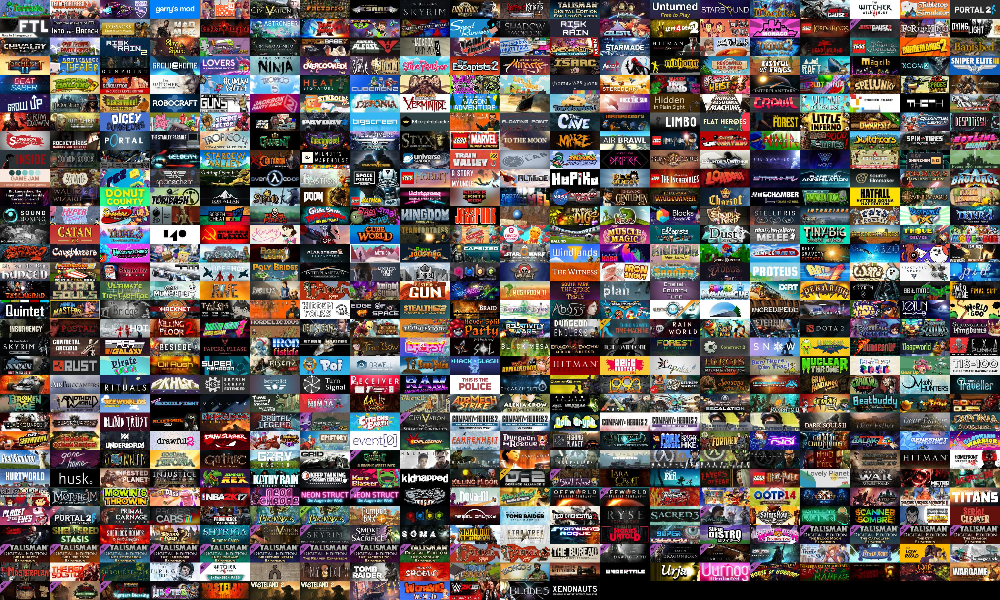

Coding Projects! #1: Collage generator for Steam games
Below, you should see a lovely image of my four most recently played games on Steam. You can also change it to display your Steam account.
If you use Firefox, this should work. If you use Chrome (or anything else), the images will be blocked, as they are mixed media. To fix this, you can allow mixed media on I added HTTPS (2024-02-19).blog.alifeee.co.uk. If I add HTTPS in the future, this should not be needed.
How to enable HTTP images on Chrome
- Navigate to site settings for
blog.alifeee.co.uk - Enable
Insecure content - Done. Now HTTP images will be allowed only for this webpage.
API status:
For my library, these are my four most recently played games. For yours, it's your four most played (recent is broken). This is HTTP content on an HTTPS page, so it may also not work if you are on Chrome - see above.
This is created fresh every time you reload the page, and comes from my server.
Is being able to have a live image like that worth the considerable (as you will unearth below) pain? Maybe. I think it's neat!
I consider myself a visual person, and as such I like to always have an image to use in combination with text (as you see on this blog's homepage any lipu tenpo posts, and any Notion page I have [unfortunately] made you subscribe to). In the past for these things I have used Python and Pillow to make collages, such as this lipu tenpo collage:

lipu tenpo is a non-profit magazine written entirely in toki pona. I originally created this cover image for personal use, but it turned out useful as a banner for the social media.
I also made a Python script to generate Steam game collages, the very topic of this blog post. This I put this on GitHub for anyone to use.
However, as it only worked locally (and my installation instructions weren't exactly... exhaustive), it couldn't be used very easily. This meant when people were interested, I ended up just generating an image for them, rather than them being able to act autonomously. This also meant that any images were fixed in aspect ratio, size, games included, etc. I did have the ambition to "put it on the web", but knowing little of the web at the time, my thoughts were "surely you can just run a Python file on a website?". After trying, I did not manage this.
But! That's where this blog post comes in! A few years later (and with more knowledge about websites, APIs, and servers) I felt I could now come up with a solution for making my collage generator more usable, and less manual.
What tools to use?
Atomised, the idea of "automatically make collages from Steam game libraries" can be split into:
- how to get steam library information
- image manipulation
- how to host the tool
How to get Steam library information
In my first attempt, I used web scraping to get a list of all games from a user's Steam profile page. While this worked, it was not robust, and a bit of a hack. By this point, I had more experience using APIs, so I decided to use Steam's API.
Annoyingly (and as is often the case with public APIs), it was not easy to read the documentation, and Steam has several APIs, with the two biggest helpfully differentiated by one being the "Steamworks API", and the other the "Steamworks Web API".
The latter had the two endpoints I needed. Firstly, a way to convert vanity URLs to steam IDs (other APIs generally want a steam ID). Secondly, an endpoint which returns the list of games owned by a player.
GET https://api.steampowered.com/IPlayerService/GetOwnedGames/v1/
The response from the games API looks like this:
[
{
"appid": 10,
"name": "Counter-Strike",
"playtime_forever": 0,
"img_icon_url": "2a9b1a1c8e8f9d1f9a9b1a1c8e8f9d1f9a9b1a1c",
"playtime_windows_forever": 0,
"playtime_mac_forever": 0,
"playtime_linux_forever": 0,
"rtime_last_played": 0,
},
{
"appid": 20,
"name": "Team Fortress Classic",
"playtime_forever": 0,
"img_icon_url": "2a9b1a1c8e8f9d1f9a9b1a1c8e8f9d1f9a9b1a1c",
"playtime_windows_forever": 0,
"playtime_mac_forever": 0,
"playtime_linux_forever": 0,
"rtime_last_played": 0,
},
]
Perfect. Just need to wrap that in some Python, and I've got the games. That boils down to something like this
import requests
...
url = "http://api.steampowered.com/IPlayerService/GetOwnedGames/v0001/"
params = {
"key": API_KEY,
"steamid": steam_id,
}
r = requests.get(url, params=params)
json = r.json()
games = response["games"]
For the actual code, see steam_api.py.
Next, the images.
Image manipulation
There was little novel here this time around, since I'd already made a collage in my old project.
Firstly, I had to find a reliable way of getting the game thumbnails. I found this URL from the store page thumbnails which works pretty well.
GET https://cdn.cloudflare.steamstatic.com/steam/apps/400/header.jpg
Play around with it, see if you can randomly find the game IDs for your favourite games (or, alternatively, see what nostalgia trips you can go on since all the low number IDs are games from about 2003).

Steam game thumbnails. I don't know exactly how Steam assigns IDs, but it seems that above a few thousand, every multiple of 10 or 100 is a different game.
We can fetch these images and use Pillow to combine them into a collage.
from PIL import Image
...
collage = Image.new("RGB", (width_px, height_px))
for i, thumbnail in enumerate(thumbnail):
row = i // columns
col = i % columns
x = col * thumbnail_width
y = row * thumbnail_height
collage.paste(image, (x, y))
return collage
Again, for the actual code I used for this, see images.py. Finally, hosting!
Hosting as an API
The original project was just a Python file. The motivation this time was to make an API, so I could host the Python file on a server and get the images from anywhere. Then, anyone could make a collage, without having to screw around installing Python (even with what fun that is).
For an API in Python, I found Flask. It seems to do all I want, as well as having an ancient-looking logo. You can run a basic HTTP server with some simple code.
from waitress import serve
from flask import Flask, request, send_file
app = Flask(__name__)
@app.route("/steamcollage/alive")
def alive():
return "Alive"
if __name__ == "__main__":
serve(app, host="0.0.0.0", port=5000)
When you visit http://0.0.0.0:5000/steamcollage/Alive on a web browser (or, for the more bold among you, make a Curl request...), you will be greeted with
Alive
Since this example is also an actual endpoint for the server I set up, you can see it live here. With only a few lines of Python code you can make a lovely web server. At the moment, it's only HTTP, not HTTPS, which means I can only really use it to serve images. But... that works fine for this!
You can see the full API code in api.py. Its function is to: take the steam ID, and required image size (rows/cols/sorting), and use the methods from the sections above to make an image and return it. Here is a briefened version of the code:
from steam_api import getGamesFromSteamId
from images import makeCollage, bytesFromPilImage
...
@app.route("/steamcollage/games")
def games():
profile_string = request.args.get("id")
columns = request.args.get("cols", default=8, type=int)
rows = request.args.get("rows", default=9, type=int)
allgames = getGamesFromSteamId(API_KEY, profile_id)
collage = makeCollage(allgames, (columns, rows))
collage_bytes = bytesFromPilImage(collage)
return send_file(collage_bytes, mimetype="image/jpeg")
With that, it's made! And to get the image, it's as simple as changing the query parameters on the URL. For example, the default image at the top of this post uses the URL:
https://steamcollage.alifeee.co.uk/steamcollage/games
?id=alifeee
&rows=2
&cols=2
&sort=recent
So, you can get any collage you want by just changing the URL in your browser. However, to make it easier, I also made a simple webpage on my website.
That means with little effort, I can make great background images like this (all of my games on Steam):

Memory issues
Making a larger collage requires downloading a lot of images. To this end, I initially set up the script to save a cache of thumbnails as it went, so that over time, collages would be quicker as more and more games were locally cached. However, I use Docker to host the app, and the server I use to host it only has a small amount of memory available to use. If I downloaded the thumbnails for all the games on Steam it would amount to several gigabytes of storage (around 30 kb average thumbnail size × around 100k games). This would not be a lot of disk usage, but for a reason I could never figure out, having a cache monotonically increased the memory usage of the Docker container, resulting in an inevitable shutdown when it reached the maximum allowed memory usage. Not knowing a lot about Docker, my solution to this was to disable caching. Perhaps in the future I can fight the issue again and turn it back on.
After I 'fixed' the first memory issues, there was another, hiding behind the first. Initially, the program worked by downloading a thumbnail, adding it to the collage, and when it was complete, resizing the collage and returning it. The problem here was that there was no maximum size for the intermediate collage, so that if you asked for many rows and columns, it created an image in Pillow many times larger than 4K resolution, and Python quickly ran out of memory, also killing the Docker container. The fix for this was more reasonable, and was just to resize the thumbnails before adding them to the image, so that the image never got larger than 4K resolution, so the memory usage was never behemothal.
Thoughts
Overall, it was a neat little contained project to make. I know a lot more about APIs, HTTP vs HTTPS, and Docker deployments, as well as using a Test-Driven-Development style to write a lot of the code. If I were to build upon the project, I'd want to add an image cache, improve the creation speed, and maybe add something funky like multithreading.
I would also most likely not deploy it with Docker a second time around. It is an extremely small-in-scope hobby project, and does not need continuous deployment. I am fine to have to execute a couple of shell commands every time I want to redeploy it.
Have a play on the frontend!
Comments
Email me → alifeee@alifeee.net :)
Message me on any social media → https://linktr.ee/alifeee :)